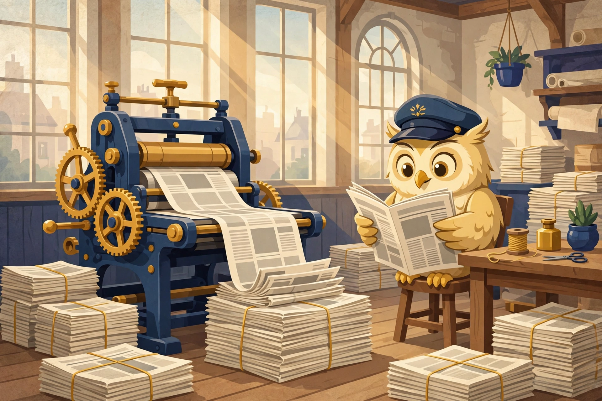

A warm old press room where the network's own morning paper is printed. Mascot: Nia the News Owl, pictured below.
The big press rolls every morning, and Nia the News Owl reads each fresh front page before it is stacked.
Ninety-eight editions stand in date order, from 2026-09-28 to 2026-10-17, each one reporting a real event from the network.
A quiet corner with a lamp and a stack of front pages, for reading the network's own story slowly.
An edition finder (a date finds its edition) and a headline search (one word searches all 98 headlines). The tools run on this page. They do not reach the web, ask for a key, or change any system.
Type a date, such as 2026-09-28.
Type one word, such as Patent.
Designs, printables and demos only. Free, downloadable, usable on this page. Each item is labeled Signature or Fun. Nothing here is for sale.
A poster of the press room, drawn from this page's hero art.
Making: Print on card and hang it. The poster is a picture, not a paper.
A printable front page built from a real edition, with its date and headline.
Making: Print, fold, and read. The edition it shows is a real archive record.
A newspaper hat folded from a spare sheet, in the old press-room style.
Making: Fold a sheet corner to corner, then fold the brim up twice. Fun only.
A cloth cap pattern for readers who want to dress the part.
Making: Cut the pattern from cloth and stitch the seams. Fun only — it reports no news.
Fun and entertainment only — never fact.
Fun — invented for fun, not a record. Nia once headlined: 'Owl Reads Own Paper, Finds Own Name, Hoot Heard Round the Press Room.' Fun only — no such edition exists.
Fun — invented for fun, not a record. The press is said to have run one extra copy all by itself, just to read the funnies. Fun only.
Fun — invented for fun, not a record. A comma once hid in the press for a week and was found in the sports pages. Fun only.